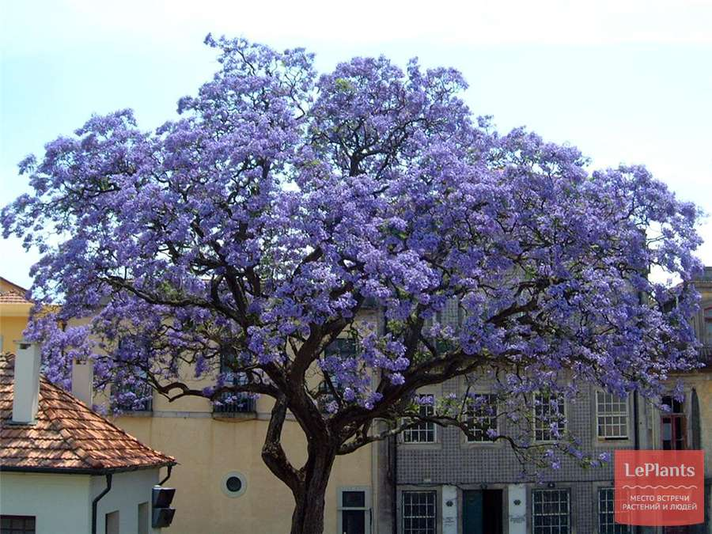
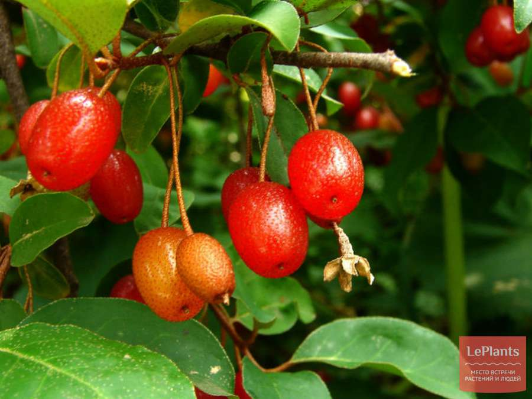
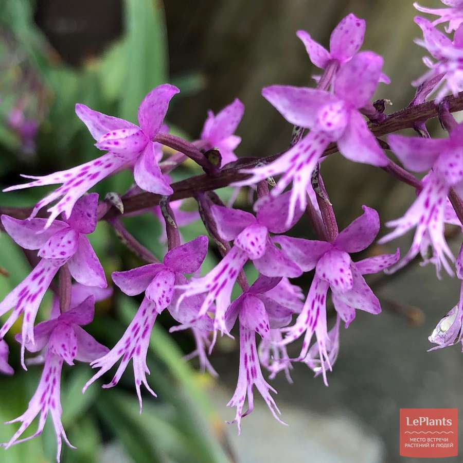
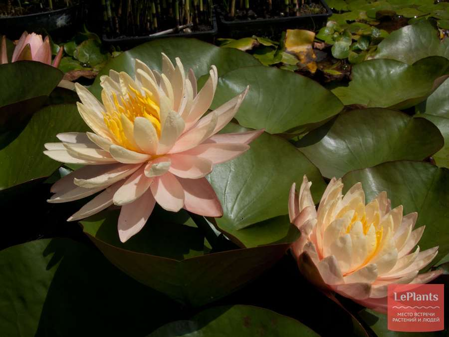

Павловния

Павловния (лат.paulownia) — род вечнозеленых и полувечнозеленых листопадных деревьев, включающий в себя около 10 разновидностей. Родина большинства из них — Китай,где Павловния считается одним из национальных растений. Постепенно Павловнии стали выращивать и в других частях Восточной Азии: Японии, Вьетнаме, Корее, Лаосе), затем — в Европе.
Лох

Род Лох (Elaeagnus) всегда был самым крупным в семействе Лоховые, а в XXI веке его состав увеличился почти вдвое. Это произошло из-за разделения уже входивших в него видов и за счет новых, переведенных из других родов Ствол бывает прямостоячим и изогнутым, серая или буровато-красная гладкая кора с возрастом шелушится.
Стеноглоттис

В 1837 году Джону Линдли доставили неизвестное растение из Транскея. Выдающийся английский ботаник описал, поименовал новый род и включил его в семейство Орхидные. Название Стеноглоттис (Stenoglottis) состоит из двух греческих слов «stenos» и «glossa», в переводе — «узкий» и «язык».
Нимфея

Род Нимфея относится к семейству Кувшинковые (Nymphaeaceae). Существует около 50 разновидностей Нимфей. Среди них есть космополиты, которые приживаются в пресных водоемах от Южной Америки до тундры: Нимфея четырехгранная (Nymphaea tetragona), Нимфея белая (Nymphaea alba), Нимфея белоснежная (Nymphaea candida).